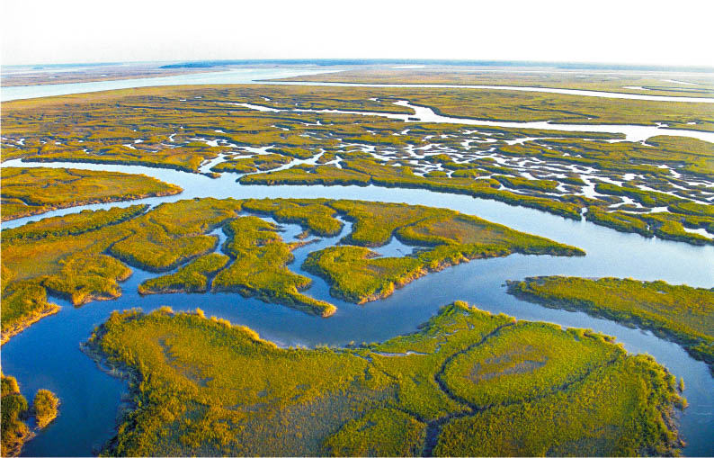
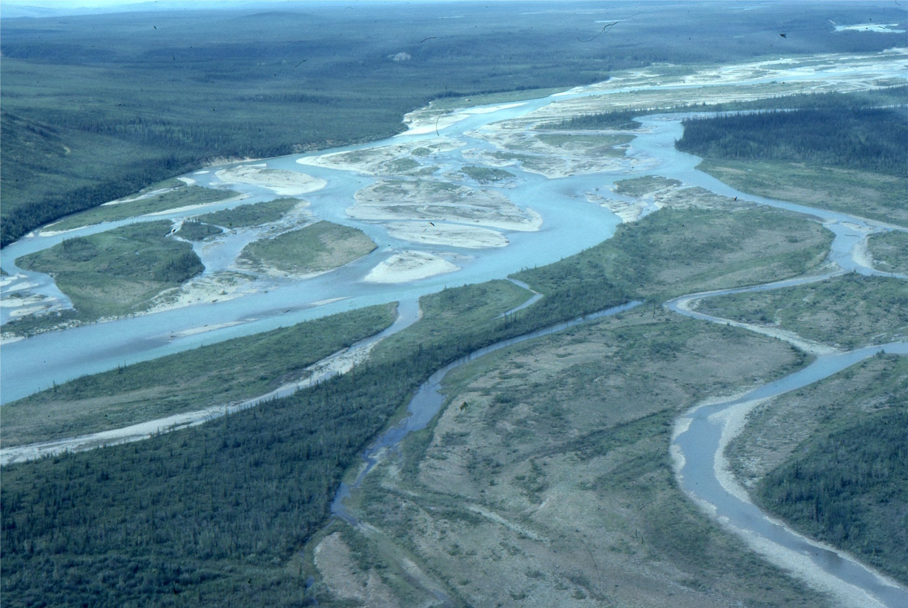
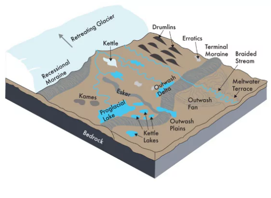

Marine geology
Why are offshore soil conditions unique?
Understanding the origins of seabed material is an important step in geohazard identification and characterising the properties and variability in the subsurface. For this chapter, we will first take a cursory overview of the geological processes which affect what soils we see underneath the sea.
Later in the course, we will look more at the engineering properties of unique, biogenic sediment: including carbonate soils, glauconite and chalk.
Plate tectonics and marine zones
The earth’s crust is broken into pieces is broken into separate pieces called tectonic plates. These plates essentially float atop of the mantle, almost like a thick molten tar, and can move independently and interact with one another. This gives rise to events such as collisions, subduction (when one plate plunges beneath the other) or sliding, which have a huge impact on the geological landscape we see today.
Tectonic plates can be made from one of two different types of material: (1) the less-dense continental crust and (2) the more-dense oceanic crust. The continental crust is also much thicker (as much as 100 km) than the oceanic crust (only about 5 km thick). However, the differences in density leads to most of continental crust floating up above sea level, unlike the oceanic crust.
There’s therefore a significant elevation change as we go from land to the deep ocean (Figure 1 (b)). To keep these changes in mind, the marine environment is therefore classified into four main zones:
- The continental shelf
- The continental slope
- The continental rise
- The abyssal plain
There are seldom any offshore activities in general on the continental rise and the abyssal plain, with most of it taking place on the continental shelf.
{kind=link}
{kind=link}
Continental shelf
The continental shelf is the shallowest part of the seafloor, essentially representing the flooded extension of each continental plate. The continental shelf rarely reaches depths of more than 200m and also has a relatively gentle gradient (1°).
{kind=link}
The shallow waters of the continental shelf means that offshore projects are usually located on the continental shelf—especially offshore wind projects. However, continental shelves also tend to be quite complex from a geological point-of-view. Changes in sea level means that continental shelves may have once between subject to the different onshore geological processes, as shown later in Section 3.
Past glacial activity meant that the marine conditions across the Dutch North Sea Sector were much different in the past. Worldwide temperatures were much colder in the late-Pleistocene epoch (at least 10,000 years ago). Therefore, glaciers and ice caps were also much larger, bringing with it a global reduction in sea levels.
{kind=link}
As a result, the Netherlands and the UK were directly connected by land—an area known as Doggerland. Just like today, the Rhine-Maas-Scheldt rivers flowed through the Netherlands and out across Doggerland, bringing clay, silt and sand from the mountains in Germany, Luxembourg and beyond. As the river slowed down across the relatively gently sloping Doggerland, sands and gravels were given a chance to come out of suspension, and the clays and silts continued on in transportation towards the then-coastline, where the river starts to come to a sandstill. These sands often belong to sand formation known as the Kreftenheye Formation, a formation colloquially known as simply the “Pleistocene sand” to Dutch onshore engineers.
The start of the Holocene epoch (10,000 years ago to present day) was signified by warmer temperatures and rising sea levels. Once again, the depositional environment in the North Sea changed from fluvial (river) deposits to marine deposits—generally a shell-rich sand formation known as the Southern Bight Formation. Onshore in the Netherlands, stagnating water gave the opportunity for clays and silts to deposit, as well as the formation of peat bogs—leading to the soft soils enveloping much of the country today.
Moreover, the daily action of winds, waves, tides and coastal erosion means the continental shelf can still be an environment in flux. Morphodynamic surveys are therefore an important part of the design and planning–describing the study of how dynamic processses, particularly those related to water and sediment movement, shape the Earth’s surface.
{kind=link}
Continental slope
The continental slope is a steep slope (up to 30°) that marks the seaward edge of the continental shelf, transitioning to the gently sloping abyssal plain (in other words, transitioning from continental to oceanic crust). The topography and geology in this area is complex: dictated by mass-wasting processes like slope failures, submarine canyons and turbidity currents.
Continental rise
The continental rise describes the reducing gradient as the continental slope approaches the abyssal plain. The zone consists of primarily accumulated sediment. This come from mass-wasting processes occurring further up on the continental slope: with gravity bringing the sediment downwards, settling down on the continental rise. Alternatively, the sediment may accumulate at the end of submarine canyons (Figure 2), forming what are known as alluvial fans.
Abyssal plain
The abyssal plain is the deep ocean floor that lies directly on the top of the oceanic crust. It is generally smooth and unaffected by many geological or hydrodynamical activities with the only exception of some mass movement processes or turbidity currents. The low sedimentation rate means the abyssal plain is often composed of very soft, underconsolidated sediments.
Marine sediments
Although the continental margins cover only 20% of the seabed, they contain nearly 75% of the total marine seidment. Here, the stratigraphy often governed by the same geological processes that affect onshore deposition, with deposits being supplied from rivers, coastal erosion, aeolian or glacial activities. These deposits are known as terrigenous sediment, that is, sediment transported by land. This sediment tends to be granular silicate-based minerals, such as quartz and feldspar, and are usually formed from the erosion of rocks.
Alternatively, sediment may be deposited through the settling of light, fine-grained particles far away from land where the geological activity is relatively low. These are known as pelagic sediments and they get deposited so slowly, that nearshore and coastal areas are overwhelmed by terrigenous deposits. Pelagic sediment can be derived from onshore deposits which get blown into the ocean, eventually settling through the water column and onto the seabed.
Biogenic sediment is a sub-category of pelagic sediment. Biogenic sediment comes from the insoluble remains of marine organisms, like the skeletons of plankton, shells or coral. These insolube remains can be formed of calcite or silica. Calcite organisms are more common in shallow water and temperate tropical climates (giving rise to limestone or chalk), whilst silica organisms are more common in the polar regions or at the equator and in very deep water.
The structure of calcitic biogenic sediment (e.g. carbonate sand) can be vastly different to silica sand (Figure 5): its almost skeletal-like nature means it is much more prone to crushing compared to silica sand. We’ll see later in the course notes how we respond to these soils from a geotechnical point-of-view.
{kind=link}
Depositional environments
Depositional environments determine what kind of sediments get deposited, essentially describing the set of physical, chemical or biological processes in which sediments, soil and rocks are added to a landform or land mass.
{kind=link}
{kind=link}
Some selected environments include:
 Lacustrine (lakes/wetlands)
A low energy environment with high sedimentation rates, resulting in primarily fine-grained seidments with high organic contents. Evaporitic deposits are also possible in arid regions, as are varved (laminated) soils if there are seasonal fluctuations in inflow rates.
 Aeolian (wind-blown)
Aeolian (wind-blown)
Wind-blown sediment in what are usually dry or well-drained areas, such as around coastal dunes or deserts. Sediment is generally well-sorted, rounded fine sand dominated by quartz.

Fluvial (river-deposited)
The resulting sediment largely depends on the type of river and the level of hydrodynamic activity. Often fine-grained sediment gets brought to sea or deposited in lakes or across flood plains. High lateral variability and sometimes erosion and channelisation of underlying sediment.

Glacial Hugely variable deposits that depend on the specific glacial process. Examples of sediment includes boulder clay (generally unsorted and unstratified) or outwash sediment (mainly gravel, sand and silt of various degrees of sorting)
Whether it’s light, fine-grained clays that get deposited, or heavy, coarse-grained gravels is not just a function of the depositional environment but also the energy within this environment. Taking Figure 7 as an example, only heavy sands and gravels can fall out of suspension near the shore—since river mouths or wave action (for example) prevents lighter particles from falling out of suspension. The depositional energy will also affect the particle roundness and sphericity.
Nevertheless Figure 7 is just a hypothetical example. In reality, local variations and subsequent changes in geological conditions will also affect the type of sediment we see.
{kind=link}
#/media/File:Null_point_theory_image1.png){kind=link}
{kind=link}
{kind=link}